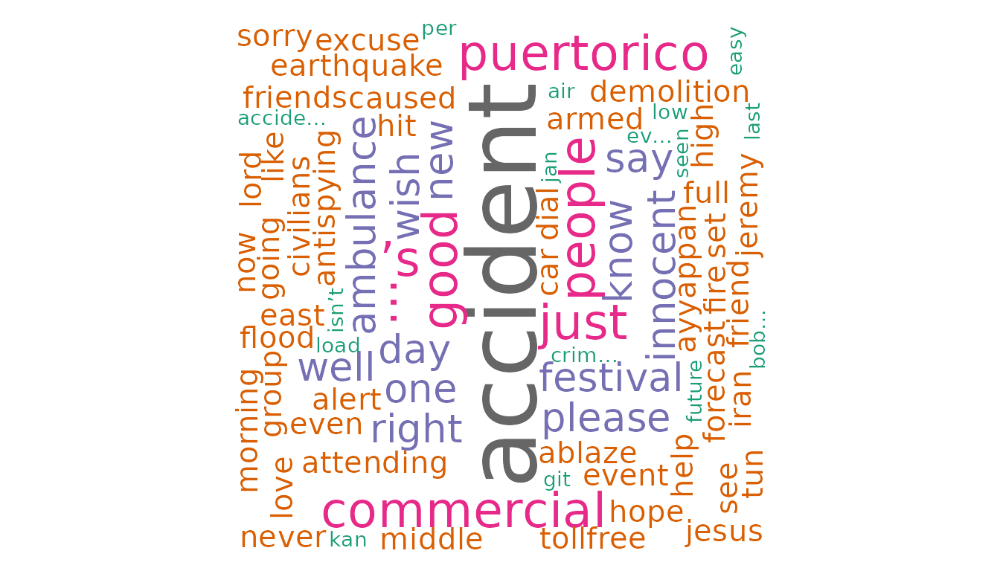

sentimentanalyzerR
sentimentanalyzerR.RmdIntroduction
This document gives you an overview of the sentimentanalyzerR package and its corresponding functions. The package is written to enable beginner level users of R to conveniently translate a given text data into graphical illustrations to draw immediate insights. This is useful especially when the survey is obtained from a large number of respondents spanning across thousands of rows. This package summarizes the major sentiment of the reviews through aggregated scores and plots.
To start using the package, follow the installation section of the README file and install the package. Then import the package using the following code.
Definitions
Compound Score - A score in the range of -1 to 1 that represents the general opinion of a document. It is computed using the valence score for each word in the document. Valence score is a score calculated for each word based on the connotation and context of its usage in a sentence.
Likert Scale - Likert scale is used in questionnaires to enable the respondents to provide a level of agreement or disagreement on a symmetric scale. The scale can be orientated either in the increasing or decreasing order. It has found wide applications in the field of statistics, psychology, business and sciences. Each level of the scale is perceived as evenly spaced in the intensity of agreement/disagreement.
Wordcloud - A condensed representation of selected words having the highest influence towards a particular sentiment category. The size of the text is relative to their frequency of occurrence in the document/corpus.
Functions
This section provides a walk-through of the package functions. A sample dataset is included as a use case for demonstration purposes.
get_aggregated_sentiment_score - Computes the majors
sentiment of the population.
likert_scale - Converts the sentiment score to a likert
scale ranging from 1-5.
sentiment_score_plot - Creates a binned histogram
showing count of reviews against the sentiment score.
generate_wordcloud - Creates wordcloud of the most
common words.
Use Case
One of the popular Use Cases for sentiment analysis would be understanding the general sentiment of tweets after a major event. For the demonstration of this Use case, we will utilize the tweets data set.
aggregate_sentiment_score
aggregate_sentiment_score computes the major sentiment
of the corpus of the dataset provide. This represents the average of the
sentiment score for each tweet in the dataset.
score <- aggregate_sentiment_score(df, "text")
# view the computed score
score
#> [1] -0.14501likert_scale
The output from the previous function is not very interpretable as it
is spread across a sentiment scale of -1 to +1. To make this
understandable to the common user, call the
convert_to_likert function as below.
likert_score <- likert_scale(df, "text")
# view the likert scale score
likert_score
#> [1] 3This returns a the overall score on the likert scale. The return value of 3 corresponds to the “Neutral” sentiment as per the Likert scale mentioned in the function documentation.
sentiment_score_plot
While understanding the overall sentiment is essential, a more insightful representation can be obtained through a histogram depicting the most frequent sentiments seen in the corpus. Each count represents a unique document in the corpus. Thus the plot can communicate how many reviews fall in each range of sentiment scores.
sentiment_score_plot(df, "text")generate_wordcloud
Visuals can be more powerful than numbers. We use the
generate_wordcloud function to display the most frequent
words in the entire corpus. This gives a deeper insight into the
specific words in the corpus that contribute towards the sentiment.
generate_wordcloud(df, "text")